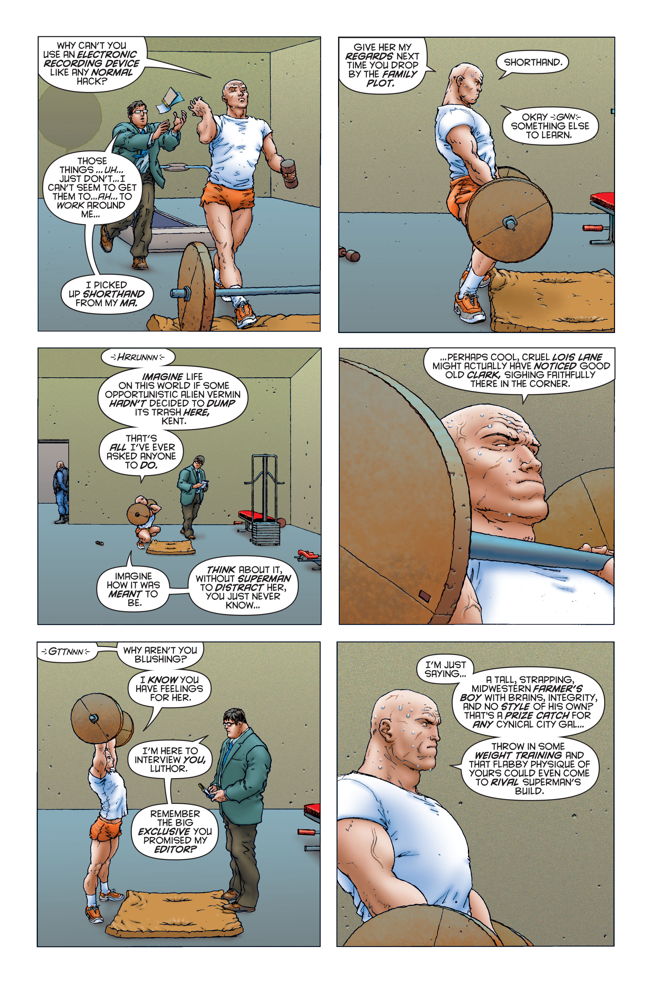

Welcome to my website!
I hope you have a good time here. Thanks for dropping by.
Favorite
Lifestyle Books
- Deskbound by Kelly Starrett (Learn proper sitting, standing, and walking. Extend your back!)
- Double Your Dating by David DeAngelo (She said yes to the date! Now what?)
- How to Cook Everything: The Basics by Mark Bittman (Most of my diet is recipes from this.)
- How to Make Love to a Woman by Michael Morgenstern (Happy girlfriend, happy life.)
- Starting Strength by Mark Rippetoe (Unlock a lifetime of sports and love. Don’t dirty bulk.)
(If you can only read one, pick Deskbound. Poor posture, which is the norm, ruins most people.)
Hobbyist Books
- Game Programming Patterns by Bob Nystrom (Tech jobs are dead. But software is still fun.)
- The Great Movies by Roger Ebert (Many can be watched with a free Kanopy account.)
- Six Easy Pieces by Richard Feynman (Physics! Read the full lectures and do the problems.)
San Francisco Bay Area Businesses
- Chiang Rai Thai Massage (Petite women walking on top of you really works out all the knots.)
- Healing Needles Acupuncture (Cured my chronic tendinopathy and gave me my life back.)
- Oakland Zoo (Animals are our cousins. It’s fun to observe our happier, better-adjusted family.)
- Real Food Bay Area (Raw milk is an addictive superfood. $30 for 4,000 high-quality calories.)
- Silicon Valley Hearing Center (Custom earplugs prevent tinnitus – a fate worse than death.)
Consumer Goods
- ASUS ROG Strix 27” 4K Monitor (Gaming and web surfing as they were meant to be.)
- De’Longhi Portable Air Conditioner (Makes working in the summer bearable.)
- DenTek Floss Picks (Floss your gums deep into the gumline. Back to front, hit every tooth!)
- iBUYPOWER Pre-Built Gaming PC (Basically mandatory as software becomes more bloated.)
- Motorola G Power (Cheap smartphone with two days of battery life.)
- Nature’s Bounty Fish Oil Softgels (Essential omega-3 fats for healthy gums and joints.)
- Nike Men’s Air Max 2090 Shoes (A 1.5” height boost to 5’11” makes life much nicer.)
- Rfiver Mobile TV Cart (Take your TV anywhere and adjust it to the optimal viewing height.)
- SABRE Pepper Gel (Self-defense you can actually use without being charged with murder.)
- Sony Bravia 65” 4K Mini-LED TV (Perfect blend of cinematic and portable.)
- Vive Wrist Brace (Theoretically type for ten hours a day. Don’t actually though.)
- ZNHIS Magnetic Bookmarks (Avoids the mess of disposable paper bookmarks.)
Sports Equipment
(Have perfect form and breath. The goal is strength and longevity, not injuries or arbitrary numbers.)
- Amazon Basics Unisex Swim Goggles (Mirrored) (Allows swimming with contact lenses.)
- BlenderBottle Classic (Protein shakes without having to clean a sharp metal blender.)
- Casio Men’s Digital Sports Watch (Swim without losing track of time.)
- Do-Win Weightlifting Shoes (Facilitate power cleans by enabling jumping with a barbell.)
- Element 26 Self-Locking Weight Lifting Belt (Allows an efficient Valsalva to safely lift heavy.)
- EVMT Liquid Chalk (Secures grip and prevents ugly callus formation when lifting weights.)
- Froning SR-1F Speed Rope (Footwork drills and rainy day cardio. Who needs a treadmill?)
- MIFAWA Men’s Zero Drop Shoes (Ideal for powerlifting. Heeled shoes subtly mess with form.)
- Mitchum Men’s Deodorant (Anti-perspirant to keep workouts focused and dry.)
- Naked Unflavored Whey Protein Powder (Twelve scoops on workout days. Four on rest days.)
- Rep 5lb Technique Plates (Load these on a training barbell for a minimal 32lb deadlift/clean.)
- Rogue Flat Utility Bench (Adjustable benches are unnecessary. Just overhead press.)
- Rogue 45lb Stainless Steel Ohio Barbell (For squats, overhead/bench presses, and deadlifts.)
- Rogue Mini Deadlift Bar Jack (Get large weights on and off a barbell on the floor easily.)
- Rogue 160lb Color Echo Bumper Plates (Add whimsical fun to otherwise serious training.)
- Rogue SML-2C Squat Stand (Numbered) (Perfect for a garage gym. Get the safety arms too!)
- Rogue 37.5lb Change Plates (Adding 5 pounds each week is 200+ pounds of gains in a year.)
- Rogue 25lb Strongman Sandbag (Models a human body to train wrestling and lovemaking.)
- Rogue 22lb Training Barbell (Useful for learning and teaching proper form on new lifts.)
- Rogue 0.5lb Fractional Plates (Microloading a single pound can bust through plateaus.)
- Speedo Men’s Jammer Endurance+ Swimsuit (Enjoy the pool while being modest.)
- Steelbody Plate and Bar Organizer (Keeps equipment tidy and out of the way.)
- Vibrelli Bicycle Floor Pump (Pumps up balls in minutes. I wish biking was less dangerous.)
- Vigoro Pea Gravel (Throw this in a 5-gallon bucket for rice bucket grip training.)
- Whitin Men’s Zero Drop Road Running Shoes (Hike and run for miles without any issues.)
- Wilson Size 7 Basketball (By far the most accessible team sport. Make friends quickly.)
Cooking Essentials
(You are what you eat. Consuming overpriced processed slop makes you a farm animal.)
- Amazon Basics 8” Chef’s Knife (Kitchen workhorse at an unbeatable price.)
- Cooks Standard 12-Quart Stock Pot (Large and portable with heat-resistant handles.)
- Garofalo Imported Italian Spaghetti (American grains make me sick. European grains don’t.)
- Kitchen Mama Auto Electric Can Opener (Opens up a whole world of canned goods.)
- Sensarte 12” Nonstick Skillet (Tacos, fried chicken, pasta sauce, eggs, pork, and more!)
- Sulu Organic Avocado Oil (Healthy vegetable oil. Eat fried foods without feeling sick.)
Philosophy Books
- The Collected Works by Arthur Schopenhauer (Being happy in a meaningless world.)
- The Conspiracy Against the Human Race by Thomas Ligotti (Nobody actually exists.)
- Straw Dogs by John Gray (Progress celebrates Pyrrhic victories over nature.)
- The Trouble with Being Born by Emil Cioran (Resignation is only the beginning.)
- The Web That Has No Weaver by Ted Kaptchuk (Chinese philosophy, as applied to medicine.)
Economics Books
(I loosely define economics as “the study of scarcity”. It’s a very broad field.)
- Bullshit Jobs by David Graeber (“Work” is more about societal control than actual work.)
- Certain to Win by Chet Richards (How to outmaneuver and defeat much larger enemies.)
- The Death of the West by Pat Buchanan (Demographics are destiny.)
- Disciplined Minds by Jeff Schmidt (We’re all carefully groomed to serve malicious elites.)
- The 48 Laws of Power by Robert Greene (Either exercise power or have it exercised on you.)
- The Gervais Principle by Venkatesh Rao (Everywhere you go, the strong exploit the weak.)
- How Civilizations Die by David Goldman (Birth rate collapse is leading us to war.)
- Natural Causes by Barbara Ehrenreich (Giving the old chemo for slow-killing cancer is evil.)
- River Out of Eden by Richard Dawkins (Suffering and scarcity are built into reality.)
- Screen Schooled by Joe Clement (Most waking hours are spent online. Kids are doomed.)
- The Unabomber Manifesto by Ted Kaczynski (All hard work gets you is humiliation.)
- Untrue by Wednesday Martin (Female sexuality is a terrifying, unstoppable force.)
History Books
(I’m interested in the things they won’t teach you at school. There’s at least two sides to any story.)
- The Age of Entitlement by Christopher Caldwell (American cultural decay from 1964 to 2015.)
- A History of Hinduism by Gagan Deep Bakshi (Reblooming after a millennium suppressed.)
- Late Victorian Holocausts by Mike Davis (50 million forgotten murders.)
- Montaillou by Emmanuel Ladurie (Based on actual interviews with medieval peasants.)
- A Republic, Not an Empire by Pat Buchanan (U.S. history from a pre-WW1 point of view.)
- The Shadow of the Great Game by Narendra Sarila (Pakistan’s Cold War origins.)
- The Unnecessary War by Pat Buchanan (Unredacted analysis of the world wars.)
- Varna, Jati, Caste by Rajiv Malhotra (The “caste system” is mostly a British lie.)
Novels
- The Long Walk by Stephen King (Metaphor for any competition where most participants lose.)
- Microserfs by Douglas Coupland (A highly paid office drone is still an office drone.)
- Pet Sematary by Stephen King (Death makes a mockery of everything.)
- The Stars My Destination by Alfred Bester (Hypnotic in its intensity.)
- Submission by Michel Houellebecq (Whoever becomes a lamb will find a wolf to eat him.)
- Things Fall Apart by Chinua Achebe (Surreal reflections on Western imperialism.)
- The Witches by Roald Dahl (A boy and his grandmother against the bankers.)
Short Stories
- “Fleep” by Jason Shiga (If you lose your memories, are you still the same person?)
- “Frost and Fire” by Ray Bradbury (One week to live or 80 years. Is there a real difference?)
- “Golden” by Nick Bostrom (Natural selection makes the world a horror.)
- “A Hunger Artist” by Franz Kafka (The best gifts find the fewest admirers.)
- “I Have No Mouth, and I Must Scream” by Harlan Ellison (Allegory for Christian God.)
- “To Build a Fire” by Jack London (One is always only a few mistakes from death.)
- “Yellow Card Man” by Paolo Bacigalupi (In the end, you’re alone.)
Comic Books
- Amar Chitra Katha by Anant Pai (Immortal wisdom from better times. Why I’m a Hindu.)
- Buddha by Osamu Tezuka (This charismatic idiot ruined India, China, and Southeast Asia.)
- The Dark Knight Returns by Frank Miller (Weapons are nothing without the will to use them.)
- Here by Richard McGuire (Life is a present moment always vanishing, and then it is over.)
- The Sandman by Neil Gaiman (Refusing to grow can be fatal. Ironically, Gaiman is a rapist.)
- Watchmen by Alan Moore (Our leaders are even more misguided than we are.)

Buddha by Osamu Tezuka


The Sandman by Neil Gaiman


Amar Chitra Katha by Anant Pai


Buddha by Osamu Tezuka


Invincible by Robert Kirkman




Swamp Thing by Alan Moore


Providence by Alan Moore


{kind=link}
{kind=link}
{kind=link}
{kind=link}
{kind=link}
{kind=link}
{kind=link}
{kind=link}
{kind=link}
{kind=link}
{kind=link}
{kind=link}
{kind=link}
{kind=link}
{kind=link}
{kind=link}
{kind=link}
{kind=link}
{kind=link}
{kind=link}
{kind=link}
{kind=link}
{kind=link}
{kind=link}
{kind=link}
{kind=link}
{kind=link}
{kind=link}
{kind=link}
{kind=link}
{kind=link}
{kind=link}
{kind=link}
{kind=link}
{kind=link}
{kind=link}
{kind=link}
{kind=link}
{kind=link}
{kind=link}
{kind=link}
{kind=link}
{kind=link}
{kind=link}
{kind=link}
{kind=link}
{kind=link}
{kind=link}
{kind=link}
{kind=link}
{kind=link}
{kind=link}
{kind=link}
{kind=link}
{kind=link}
{kind=link}
{kind=link}
{kind=link}
{kind=link}
{kind=link}
{kind=link}
{kind=link}
{kind=link}
{kind=link}
{kind=link}
{kind=link}
{kind=link}
{kind=link}
{kind=link}
Click the pictures!
Movies
(Classic films are often re-released in U.S. theaters. See here for a list of upcoming airings.)
- Angel’s Egg by Mamoru Oshii (Borrowed time, borrowed eyes, borrowed world.)
- The Apu Trilogy by Satyajit Ray (Precious blueprints of pre-modern Hindu life to return to.)
- Chhaava by Laxman Utekar (Heralds a Hindu revival a thousand years in the making.)
- Children of Men by Alfonso Cuarón (If your people have no future, you’re a slave for nothing.)
- Citizen Kane by Orson Welles (Money can’t buy wisdom, a personality, or health.)
- Devi by Satyajit Ray (When men make war, it’s always women and children who suffer.)
- Don Juan DeMarco by Jeremy Leven (Living without illusions is a fast track to depression.)
- Enter the Dragon by Bruce Lee (Imagine the world if the Chinese had embraced their culture.)
- Guess Who’s Coming to Dinner by Stanley Kramer (Still radical 60 years later, sadly.)
- Justice League: Gods and Monsters by Bruce Timm (“Adult” superheroes done right.)
- Lord of War by Andrew Niccol (Post-Cold War globalized gun-running for fun and profit.)
- The Maltese Falcon by John Huston (Invented “film noir”. Tough talk, trenchcoats, cold world.)
- My Neighbor Totoro by Hayao Miyazaki (Captures childhood joy and the essence of Shinto.)
- The Shining by Stanley Kubrick (Eerily beautiful and built on genocide. Just like America.)
- The Sunset Limited by Cormac McCarthy (Suicide really just speeds up the inevitable.)
- Synecdoche, New York by Charlie Kaufman (Trying and failing to make sense of life.)
- The Talented Mr. Ripley by Anthony Minghella (Ever wonder how politicians see you?)
- Threads by Mick Jackson (There’s nothing fun about the “end of the world”.)
- Vertigo by Alfred Hitchcock (Perfectly embodies disorientation. San Francisco at its prettiest.)
- Vivarium by Lorcan Finnegan (Raising kids who are “educated” by others is the ultimate cuck.)
- Watership Down by Martin Rosen (Moving depiction of the universal “will to live”.)
- The Wrestler by Darren Aronofsky (The white man’s pretensions are really a slow suicide.)
(Pro tip: Steam Link can stream pirated movies from your browser to your TV. Use a VPN!)
Video Games
- Arctic Eggs (Masterclass in setting and mood. Captures the nihilism of today’s youth culture.)
- Batman: Arkham City (Hunt 2D thugs from the sky as a 3D predator. “It’s the freakin’ Bat!”)
- The Case of the Golden Idol (Mad libs deduction at its finest. Treats Hinduism with respect.)
- Grand Theft Auto V (Money is worthless paper without freedom. Be a man in a world of dogs.)
- The Great Ace Attorney Chronicles (Mercilessly roasts whites for their racism.)
- Half-Life (You are alone and everyone you meet wants to harm or control you. Very relatable.)
- Hotline Miami (With proper visibility, one man can defeat a hundred. Killer soundtrack.)
- Pikmin (Through strategy, group cohesion, and courage, no obstacle is insurmountable.)
- Poker Night at the Inventory (All the fun of stock trading without the addiction and bankruptcy!)
- Sleeping Dogs (Grand Theft Auto meets Hong Kong cinema. The triad life is the life for me.)
- Super Mario Galaxy (Divinely inspired 3D platforming. It’s hard to believe humans made this.)
- The Witness (Trains the player to take an intellectual view of life, like a spectator at a play.)
Background
Education

B.S. Computer Engineering, UCSD, 2016
Fun fact: I cheated as much as I could, failed multiple courses, and graduated with a 2.939 GPA in 2.5 years. Fuck school!
Click the pictures!
Physical Stats
Every man should be able to squat his bodyweight, bench 135, do a chin-up, and run a mile.
(All weights in pounds. “3x5” means “3 sets of 5 repetitions”.)
- Height: 5’9.25”, Weight: 180, Age: 30
- Low-Bar Squat: 155 (3x5), Bench Press: 115 (3x5), Overhead Press: 67.5 (3x5)
- Deadlift: 185 (1x5), Power Clean: 35.5 (5x3), Chin-Ups: 1x2
(Last updated August 21 2026.)
Political Views
I’m a U.S.-born Hindu. I’ve lived in Silicon Valley most of my life and got rich during COVID.[1]
- Support: Hindutva for India, Open Borders and Fourth-Wave Feminism for “White” Nations
- Oppose: White Supremacy, Islamism (Muslim Supremacy), Christian Fascism
Now that I’m free, I may leave. But to where? Europe? Japan? An SEC town? A big house in India? Like Warren Buffett, I’m presently invested in T-Bills in anticipation of an economic crash.[2][3]
Most important things in life (your genetics, birthplace, economic conditions in your twenties, etc.) are out of your control. If you’re unhappy with how your life turned out, try to be easier on yourself.
{kind=link}
U.S. politics is now decided entirely by bipartisan special interest groups, so I don’t vote any more. I encourage you to stop voting as well. Participating in the farce just legitimizes it.
We seem to be leaving an era of globalization and connectivity for one of war and atomization. The U.S. Empire (1945 - 2022)[4] is in its death throes, and what comes after is uncertain.
[1] By "rich" I mean I can afford a nice apartment and some hobbies in a high cost-of-living area while avoiding having to work during bad job markets (like the present one). When jobs are scarce, employees are worked to the bone and it's dog-eat-dog. Not my scene. When good jobs become easy to find again, you'll likely see me schmoozing my way into my own business or an executive position. Should the job market never improve (as happens when empires fall), I don't mind dating college girls full-time. Not a bad ending.
[2] The S&P 500 is wildly overvalued right now (AI is a scam that costs far more money to operate than it earns), so I'm happy to wait. It's crucial to never "FOMO" into anything, especially when you live in a nation run by Epstein List pedophiles who want to enslave you. Most long-time investors I know lost money or are breaking even after inflation. It's obvious the "markets" are a rigged carnival game.
[3] I'm also investing in my health (strength training, running, swimming, boxing, calisthenics, yoga, raw milk, fish oil). You should too. Prevention is the best medicine. Most surgeries and prescribed drugs just kill you slowly. Avoid doctors, eat healthy, don't drink, live well. I'd like to take up golf and tennis for their scenic and social aspects. Scuba diving, gardening, and filmmaking also sound fun. I have no interest in children of my own[3.5], but do feel some obligation to other Hindus. Cultivating the diaspora is a worthwhile goal.
[3.5] As someone "smarter than the average bear", I think I can use my financial independence to both live a grand life and make a lasting positive impact on thousands of people. (Eusocial-maxxing!) Most people have neither intellect nor money, and so marrying a good person and raising good children is the best course for them. But as someone with both, I'd like to optimize for true freedom. (Once again, 99% of people cannot live like me. Marry a nice girl and have lots of kids. At least three!)
[4] 1945 as the start date is pretty obvious (World War 2). I picked 2022 as the end date for the Russian invasion of Ukraine, the end of zero interest-rate policy (which kept America chugging post-2008), and the rise of AI/remote work (which make hubs like Silicon Valley and Hollywood obsolete by enabling a truly global workforce). 2018 (U.S.-China trade war) and 2023 (Israel-Gaza war) also mattered. Another possible end date is 2020 (COVID-19 lockdowns/PPP loans and a majority of U.S. children are now non-white[4.5]).
[4.5] America was founded on white supremacy, so a non-white America will necessarily fade into obscurity. (A country of mercenaries who fly home every time the economy tanks won't last very long.) The rise of new powers like Israel and India is a consequence of the ongoing extinction of the white man. Long-term, I hope for and expect India to be the Eurasian and maybe global superpower by ~2100. More stable African nations (Kenya?) may also be big players. China/Korea/Japan, Russia, countries in Europe, and Iran/Turkey won't exist as nations. Many already have decreasing populations. Modern racism might be a way of coping with imminent doom.